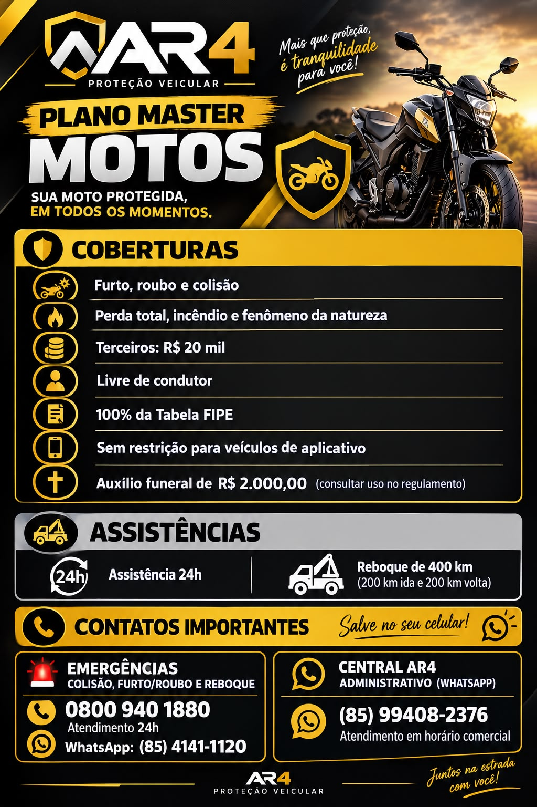

ESCOLHA SUA MOTO
Qual combina com a sua rotina?
Toque em uma moto para destacar a opção que será apresentada.
Deslize para ver todas as motos disponíveis.
Nenhuma moto disponível no catálogo.
Cadastre uma moto no painel para iniciar a apresentação.
Abrir painelA MOTO ESCOLHIDA
VALOR DA MOTO
COMO COMEÇA
Todo cliente começa com 6 meses de locação.
A intenção de compra só pode começar depois desse período e depende de nova aprovação.
PARA RETIRAR A MOTO
Primeiro vem a caução.
Simular parcelas da caução +
ENTREGA DA MOTO
A moto sai revisada.
PRONTA PARA COMEÇAR
Você recebe com o tanque cheio.
PROTEÇÃO FÍSICA
A moto tem protetor de carenagem.
PROTEÇÃO DA MOTO
Proteção e rastreamento acompanham o veículo.
O plano completo está nesta imagem para que cada cobertura e contato sejam explicados com clareza.

RASTREAMENTO E SEGURANÇA
A moto pode ser localizada.
PRIMEIRA REVISÃO
Aviso obrigatório aos 900 km.
TROCA DE ÓLEO
1.000 km
O óleo deve ser trocado a cada mil quilômetros rodados.
PRÓXIMAS REVISÕES
A equipe indica onde fazer.
Fale com a equipe antes de levar a moto para manutenção.
VISTORIA PRESENCIAL
A moto é apresentada uma vez por mês.
DESGASTE NATURAL
Durante a locação, a Locafort cuida.
AVARIA E MAU USO
O cliente responde pelo dano que causar.
USO PERMITIDO
A moto pode acompanhar sua rotina.
LIMITES DO CONTRATO
A moto não pode ser cedida ou alterada.
MULTAS DE TRÂNSITO
O pagamento tem prazo.
DEPOIS DOS 6 MESES
O cliente escolhe o próximo caminho.
Essa escolha acontece somente depois do contrato inicial.
CONTRATO COM INTENÇÃO DE COMPRA
Uma nova etapa, sujeita à aprovação.
QUANDO ESSA MODALIDADE COMEÇAR
Óleo e manutenção passam ao locatário.
A LOCAFORT CONTINUA COM
Documentos e proteção seguem organizados.
TRANSFERÊNCIA AO FINAL
O custo fica por conta do locatário.
A contratação e as etapas finais dependem da análise e das condições do contrato.
PRÓXIMO PASSO ·
Separe os documentos para a análise.
A análise não garante aprovação. Nunca envie senha ou código Gov.br.